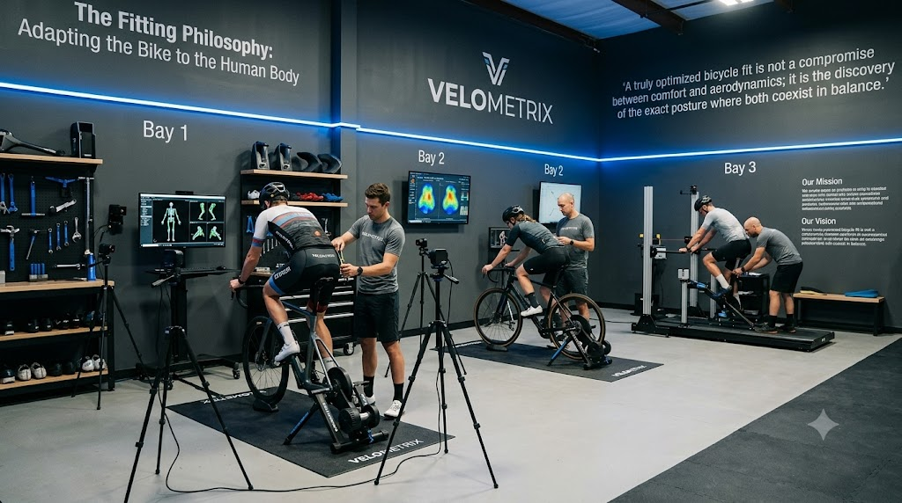
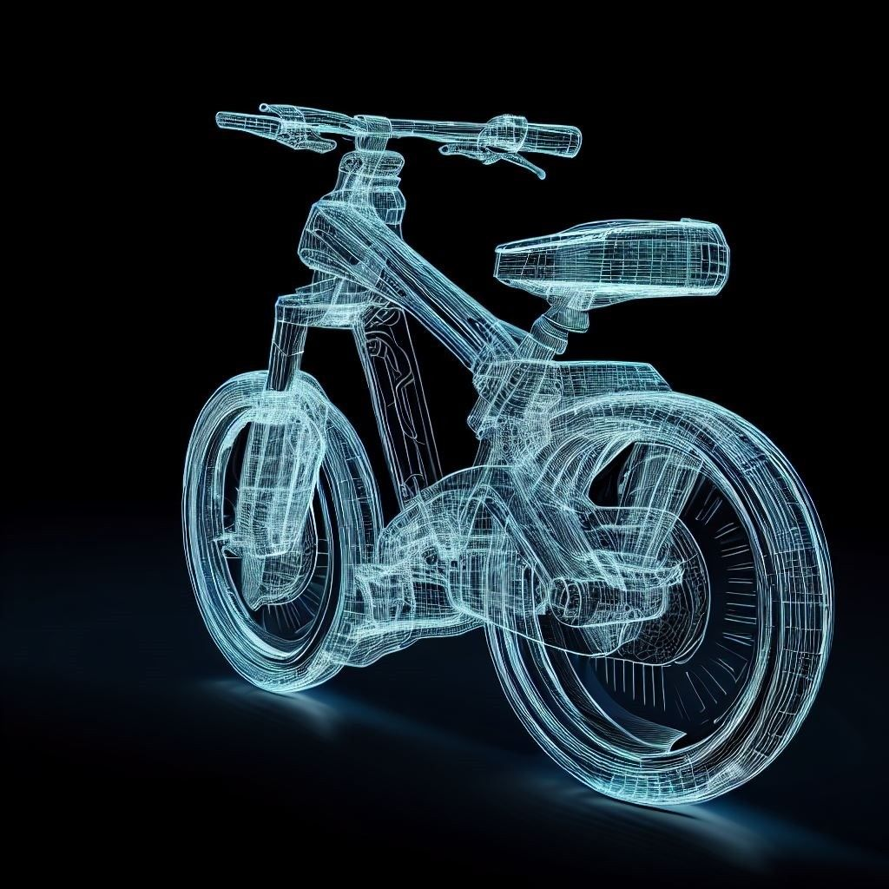

Pioneering the Science of Cycling Comfort & Velocity.
At VELOMETRIX, we don't believe in guessing rider geometry. We combine clinical musculoskeletal screening, synchronized 60Hz 3D optical tracking, and 64-sensor dynamic pressure telemetry to adapt the bicycle to the human body.
The Fitting Philosophy: Adapting the Bike to the Human Body
We reject the retail dogma that forces human anatomy into arbitrary factory bike dimensions.

“A truly optimized bicycle fit is not a compromise between comfort and aerodynamics; it is the discovery of the exact posture where both coexist in balance.”
Why Traditional Bike Fitting Fails
Standard retail bike shops frequently treat bike fitting as a secondary sales gimmick: raising the saddle until a rider's heel touches the pedal, holding a plastic goniometer to a stationary leg, and guessing stem length by eye. But a rider who is comfortable while stationary often experiences agonizing knee strain, numbness, or back spasm 90 minutes into a real road climb.
At VELOMETRIX, fitting is not an accessory to bicycle sales—it is our sole, dedicated scientific discipline. We do not manufacture frames or sell retail bikes. Our singular loyalty is to your biomechanics, muscular efficiency, and musculoskeletal health.
When an anatomical restriction (such as a leg-length discrepancy, tight hamstring, or pelvic torsion) meets an unyielding bicycle frame, the human body will always compensate at the weakest link: the patella, the perineal nerve, or the cervical spine. By adapting the bicycle precisely to the skeleton, we unlock sustained power output without metabolic penalty.
Our Mission
To eliminate cycling-induced overuse injuries and unlock peak pedaling efficiency through clinical sports science, objective dynamic telemetry, and millimeter precision.
Our Vision
To establish the benchmark for digital cycling kinematics worldwide, providing riders with permanent cloud telemetry records that transfer across every bike they ever own.
100% Brand Neutral
Because we do not sell bicycle frames, our recommendations are completely impartial. We test components solely to optimize your unique kinetic chain.
30-Day Guarantee
Every bike fit includes an unconditional 30-day road adaptation window with complimentary follow-up micro-adjustments until your comfort is 100% verified.
The 4-Stage Kinetic Chain Framework
Every millimeter change at the handlebars alters pelvic tilt; every millimeter change at the saddle alters foot arch compression. That's why our protocol evaluates riders in an uncompromising anatomical sequence.
Pre-Fit Musculoskeletal & Flexibility Screening
Off-bike assessment of hamstring flexibility, pelvic tilt, leg-length discrepancy, and spinal range of motion before touching any bike bolts.
Foot-Pedal Foundation & Subtalar Neutrality
Cleat placement, rotational float, stance width (Q-factor), and custom varus/valgus shims to ensure knees track vertically without lateral wobble.
Pelvic Center of Mass & Saddle Decompression
Saddle height to the millimeter, fore/aft positioning, and 64-sensor dynamic pressure mapping to eradicate perineal numbness and stabilize sit-bones.
Dynamic Cockpit & Aerodynamic Optimization
Handlebar stack, reach, width, and hood angle configured to protect open thoracic breathing volume, relax shoulders, and preserve an open hip angle (>45°).
Clinical Rider Transformations
Real cyclists whose chronic pain was eliminated through objective biomechanical correction.
Chronic IT-Band Friction & Anterior Knee Pain
Cyclist suffered sharp right lateral knee pain after 40km. Lab screening revealed 4mm anatomical leg-length discrepancy and uncorrected forefoot varus. Added 1.5° varus cleat wedge and 3mm shoe shim; raised saddle 8mm.
L4-L5 Lumbar Strain & Perineal Numbness
Rider experienced severe saddle numbness and debilitating lower back spasms on 100-mile rides. GebioMized pressure mapping isolated 850 mbar soft-tissue peak. Transitioned to short-nose cut-out saddle with 1° tilt; raised cockpit stack by 20mm.
Hip Impingement & Aero Drag Optimization
Triathlete was losing power in TT tuck due to acute 40° hip angle at top dead center. Cockpit pads brought inward by 24mm and tilted 15° upward, preserving open thoracic breathing while lowering frontal area (CdA).
14 Years of Biomechanical Innovation
From a solitary fitting jig in Boulder to an internationally accredited sports science laboratory.
Foundation in Boulder, CO
Founded with a dedicated mission: to treat bike fitting as an independent sports medicine science rather than a retail add-on.
Musculoskeletal Medical Integration
Established our mandatory pre-fit physical therapy screening, diagnosing pelvic torsion, hamstring tightness, and functional leg-length asymmetries.
60Hz Optical Motion Array
Upgraded all studio bays to multi-camera infrared arrays, tracking active retroreflective markers across continuous pedal revolutions.
GebioMized 64-Sensor Lab Certification
Incorporated 64-point saddle pressure telemetry and expanded our test saddle library to 35+ physical ergonomic shapes.
Digital Rider Dashboard Launch
Launched client digital portal giving every fitted rider immediate cloud access to their coordinate sheets, kinematic angles, and fit history.
Accredited by Global Biomechanical Bodies
Our methodologies adhere strictly to the highest independent medical and biomechanical standards.
IBFI Level 4 Certified
International Bike Fitting Institute Level 4 master status—the highest internationally recognized credential in bicycle fitting.

Retül 3D Master Studio
Certified advanced 3D motion capture center adhering to verified optical marker calibration and dynamic reporting standards.
GebioMized Pressure Lab
Certified German biomechanics center for dynamic saddle pressure mapping, pelvic stability, and perineal relief verification.
BikePT Medical Certified
Clinical certification integrating physical therapy assessment to prevent chronic cycling overuse injuries and joint impingements.
The VELOMETRIX 5-Point Studio Commitment
Every fitting session is backed by our strict quality protocols and guarantees.
30-Day Road Adaptation Guarantee
If your body requires fine-tuning as your muscles adapt to your new geometry on the road, follow-up adjustments are 100% complimentary within 30 days.
100% Brand & Shop Neutrality
We never accept manufacturer incentives or push unnecessary components. We test what works best for your skeleton, regardless of brand.
Cloud Telemetry in Rider Dashboard
Every measurement, saddle coordinate, and video recording is stored permanently in your digital Rider Dashboard for instant access anywhere in the world.
Physical Therapy Integration
Your fit begins with a certified clinician examining functional movement patterns, muscle imbalances, and joint ranges before touching your bicycle.
Extensive Physical Test Library
Test from our in-studio inventory of 35+ ergonomic saddles, 20+ test stems, and varied handlebar geometries during your appointment before spending a dollar.
Multi-Bike Portability
Your coordinates can be translated directly to your winter training bike, gravel rig, or rental bike when traveling abroad.
Frequently Asked Studio Questions
Everything you need to know about preparing for your session at VELOMETRIX.
Ready to Experience True Biomechanical Precision?
Reserve your session across our 3 specialized diagnostic bays and unlock pain-free endurance performance backed by our 30-day adaptation guarantee.